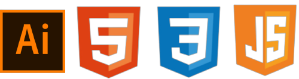
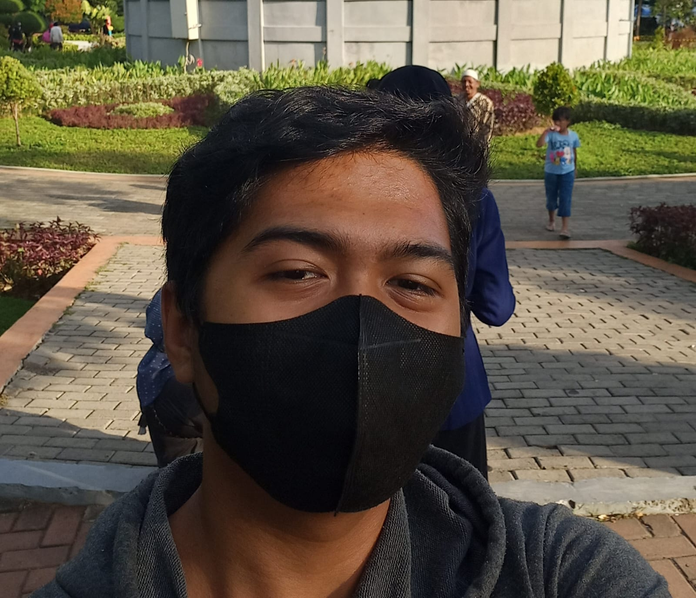
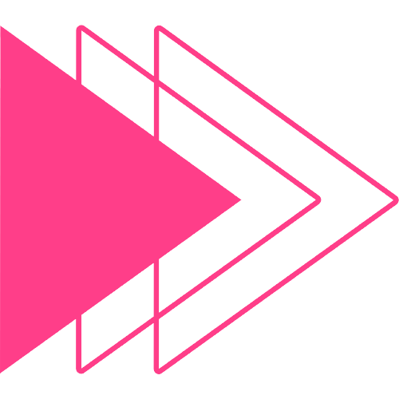
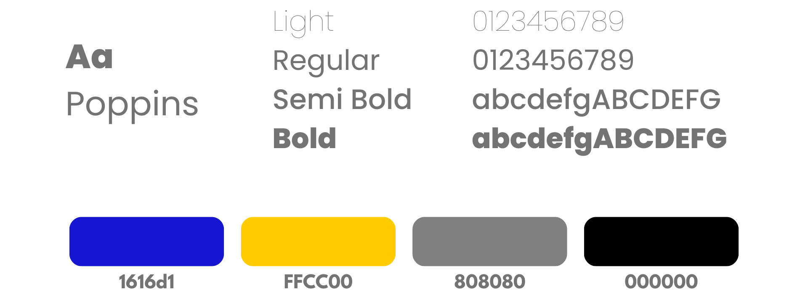
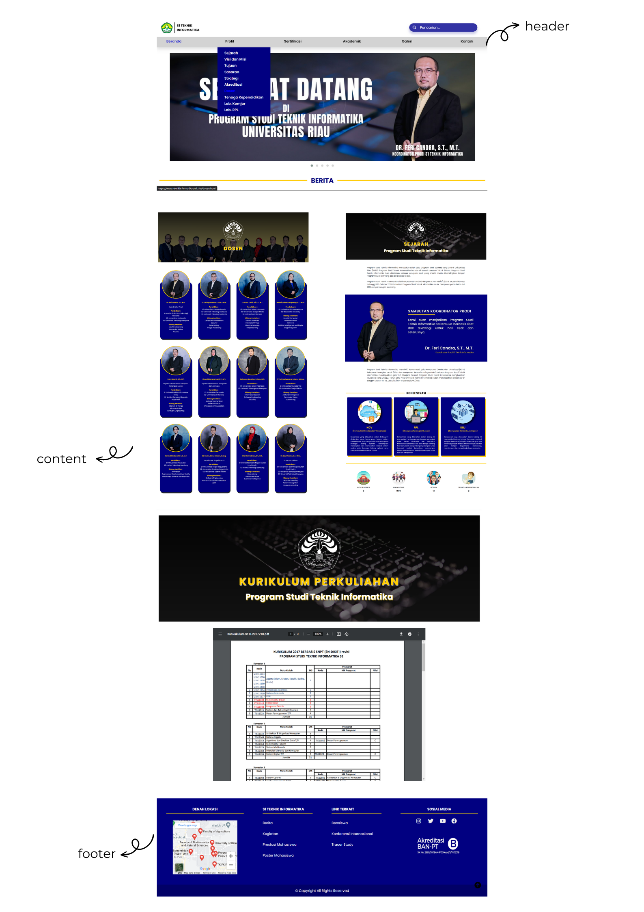
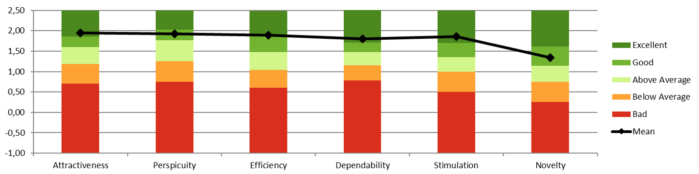

RE-DESIGN
WEBSITE TEKNIK INFORMATIKA UNRI

Made with

Collab with



This is my first project in building a front-end website. The theme of this project is the Re-Design of the UNRI Informatics Engineering Website. I worked on this project in collaboration with my colleague, using Git Hub for seamless teamwork. To create the mockup, we utilized Adobe Illustrator tools. For website development, we utilized HTML, CSS, and JavaScript.




Based on the benchmark results, specifically in terms of attractiveness, it received an excellent score. It also achieved a good score in terms of perspicuity and efficiency. Moreover, it obtained an excellent score in terms of dependability and stimulation, while receiving good grades for novelty.